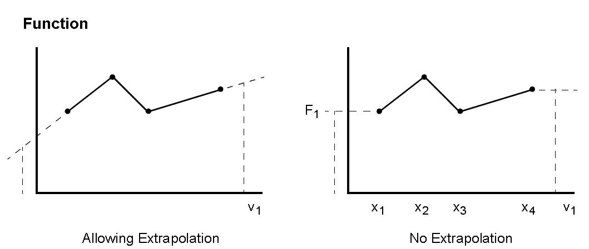
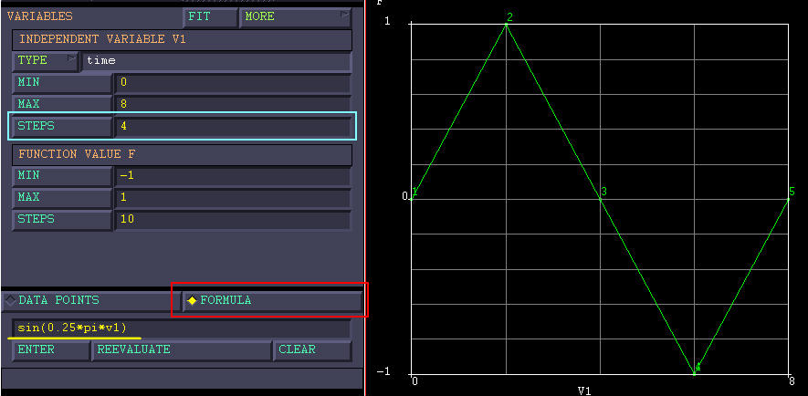
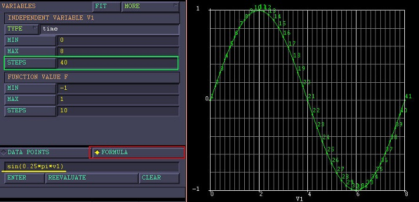
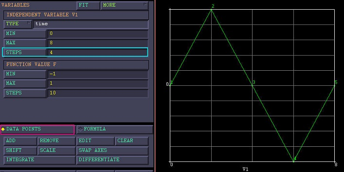
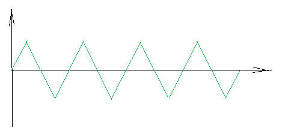

MSC.MARC 2010表格：数据模式¶
2012-10-20 | finite element analysis
根据第一部分介绍的通过输入公式（FORMULA）创建表格曲线后，即可供Marc程序调用——根据当前时刻的自变量值获取表格函数值。DATA POINTS的输入方式只给出了曲线在有限节点位置的函数值，如何处理自变量位于两节点之间时刻的函数值？一旦当前时刻对应的自变量超出表格范围，又该如何处理？本文即对表格曲线的数据模式进行介绍。
根据Marc用户手册1的描述，表格曲线的函数值具有两种不同的数据模式：
The function can be input through the TABLE model definition option using either the piecewise linear mode or the equation mode.
-
In the piecewise linear mode, the result is interpolated between the given data values.If the independent variable is outside of the range of data entered, the result will be either extrapolated or the last value will be used.
-
In the second mode, the function may be entered as a mathematical equation.
分段线性模式¶
通过外部数据读入或DATA POINTS选项直接输入散点得到的表格曲线为分段线性模式（the piecewise linear mode）。在输入数据区间内，自变量对应的数值是最近的两个输入数据的线性插值；若超出此范围，则有两种不同处理方式，默认为根据最后两个点线性外推，另外也可以继续使用最后一个点的数值。

方程模式¶
通过FORMULA选项输入函数公式得到曲线为方程模式（the equation mode），任意自变量（即便超出了表格显示上的范围）对应的数值均可直接代入公式计算。
注意
在显示上，程序都是通过计算有限数目（取决于自变量自定义的分段数）的点的坐标，然后进行描点作图。所以，有可能曲线上显示的数值与程序真实采用的数值并不一致。
例如，在[0,8]区间定义关于变量v1曲线f=sin(0.25*pi*v1)，当自变量划分段数分别为4和40时，曲线显示形态分别如下图所示：
 
虽然二者的显示形态完全不同，但对于Marc来说，输入是同一条曲线。v1=1处的f值，不是线性插值得到的f=0.5，而是直接代入计算得到的f=sin(0.25*pi)=0.707.
如果将公式输入得到的曲线由FORMULA形式改为DATA POINTS形式，数据模式相应地由方程模式切换到了分段线性模式，此时程序将采用插值的方法计算未知点的坐标。如下图所示，此时对于v1=1，其函数值将由1,2点插值得到f=0.5。

应用示例¶
以上差异是需要注意的地方，但换个角度，也可以作为灵活运用表格的技巧。
例如，对于下图所示的运动形式，可以先用FORMULA形式输入公式f=sin(0.25*pi*v1)，同时注意设置好自变量步数，以便得到相同的显示形式；然后修改为DATA POINTS模式，使其真正变为图中所示曲线。

-
Marc® 2010 Volume A: Theory and User Information ↩